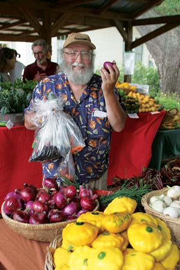

At Mother Earth News, we aim to bring you practical, thoroughly researched advice about inexpensive ways to live a more fun and conscientious life. We share ideas for how to accomplish the things you want most, while helping to sustain your family, your neighbors and our planet.
Simple ideas - like growing tomatoes, monitoring your car’s mpg or installing a programmable thermostat - are our kind of fun. We call them “here-and-now” projects. But we also get excited about big-picture, more elaborate ideas such as a solar roof, a zero-emissions electric car or building an energy-efficient workshop. Those go on our “later-and-wow” project list. We want to get you involved in these big - and little - dreams of ours, and you’ll find plenty of both in this issue.
For example, did you know you can save a bundle on summer household electric bills just by opening the right windows at the right time? And one of the simplest “technologies” to make it happen is a windsock. Then again, you might choose to forgo air conditioning altogether by adding a venting cupola to your roof. This elegant design helps you save money and minimize pollution, while adding architectural value to your home. You’ll find 48 eco-friendly home cooling ideas, ranging from those that are easy and inexpensive to do right now to, “Gosh! Wouldn’t that be wonderful someday?”
In Enjoy Fresh, Local Food All Year, you’ll learn how you can eat delicious, flavorful food every day of the year. It will not only taste better, but also save energy and support local farmers. If you have a garden, consider investing in a new root cellar or pressure canner, or buying a simple cooler to go in the garage. But whether you grow it or simply shop at your local farmers market, you can enjoy the taste and reward of better flavors that are better for the environment.
We hope you’re inspired by the “here-and-now” ideas and some of the “later-and-wow” ambitions to create a more fulfilling, more sustainable life. Have a great time while you’re at it!
- Mother
|
 WILLIAM D. ADAMS You can grow a large garden and preserve all your own produce, or try something as simple as freezing a few veggies from the summer farmers market to use in winter. |
|
|